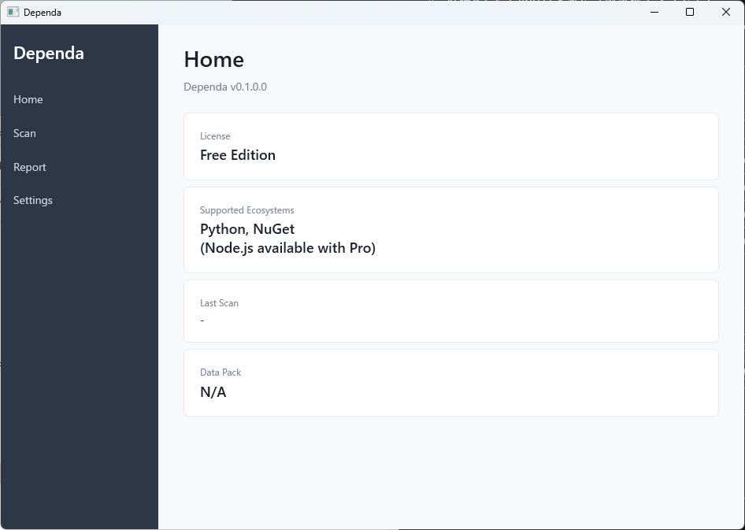

Chapter 1: はじめに
インストール・初回起動・画面構成
Dependa v2.0 とは
Dependa は OSS レビュー・承認・レポートツール です。SBOM（ソフトウェア部品表）をインポートまたはフォルダスキャンで生成し、依存ライブラリのリスク分析・レビュー・承認ワークフロー・レポート出力を一貫して行えます。
動作要件
| 項目 | 要件 |
|---|---|
| OS | Windows 10 Version 2004 以降 / Windows 11 |
| ランタイム | WebView2 Runtime（通常は OS に同梱済み） |
| ディスク容量 | 約 50 MB |
| インターネット | オフラインでも基本機能は利用可能（オンライン補完は Pro 機能） |
インストール方法
Dependa は Microsoft Store からのみインストールできます。
- Microsoft Store を開き、「Dependa」を検索します。
- 「入手」ボタンをクリックしてインストールします。
- インストール完了後、スタートメニューから「Dependa」を起動できます。

初回起動と利用規約
- Dependa を初めて起動すると、利用規約（Terms of Use）の同意画面が表示されます。
- 内容を確認し、「同意する」をクリックすると、メイン画面に進みます。
- 同意しない場合、アプリは終了します。
v2.0 の基本ワークフロー
Dependa v2.0 では、以下のワークフローで OSS を審査します。
- SBOM を開く、またはフォルダスキャンを実行 — CycloneDX / SPDX 形式の SBOM ファイルをインポートするか、プロジェクトフォルダをスキャンして依存関係を検出します。
- レビュー — 検出された各パッケージのリスク（High Risk / Risk / Known-Normal）を確認し、レビューを行います。
- 承認 — レビュー完了後、承認ワークフロー（Pro）でレビュー結果を承認します。
- レポート出力 — Executive Summary・Action Required・リスク分析を含む HTML レポートを生成します。
画面構成の概要
Dependa v2.0 は以下のメイン画面で構成されています。
| 画面 | 説明 |
|---|---|
| ダッシュボード | レビューワークフローのステータス件数、直近のレビュー状況を表示します。 |
| SBOM / スキャン | SBOM ファイルのインポートまたはフォルダスキャンを実行し、結果を確認する画面です。スキャン中はロックオーバーレイが表示されます。 |
| レポート | 生成された HTML レポートや SBOM を閲覧・管理できます。 |
| 設定 | 言語の切替、オンライン補完の ON/OFF、Pro ライセンスの管理を行います。 |
左側のナビゲーションバーから各画面にいつでも切り替えられます。現在のページはナビゲーション上でハイライト表示されます。

レビューワークフローの状態
v2.0 では各レビューセッションに以下のステータスがあります。
| ステータス | 説明 |
|---|---|
| NotStarted | レビューがまだ開始されていません。 |
| InReview | レビュー作業中です。 |
| Completed | レビューが完了しました。 |
| PendingApproval | 承認待ちの状態です（Pro）。 |
| Returned | 承認者から差し戻されました（Pro）。 |
Chapter 1: Getting Started
Installation, first launch, and screen overview
What is Dependa v2.0?
Dependa is an OSS review, approval, and reporting tool. Import SBOMs (Software Bill of Materials) or generate them via folder scan, then perform risk analysis, review, approval workflow, and report generation in a unified workflow.
System Requirements
| Item | Requirement |
|---|---|
| OS | Windows 10 Version 2004 or later / Windows 11 |
| Runtime | WebView2 Runtime (usually included with the OS) |
| Disk Space | Approximately 50 MB |
| Internet | Basic features work offline (online enrichment is a Pro feature) |
Installation
Dependa is available exclusively from the Microsoft Store.
- Open the Microsoft Store and search for "Dependa".
- Click "Get" to install the app.
- After installation, launch "Dependa" from the Start menu.

First Launch and Terms of Use
- When you launch Dependa for the first time, the Terms of Use acceptance screen is displayed.
- Review the terms and click "Accept" to proceed to the main screen.
- If you decline, the app will close.
v2.0 Basic Workflow
In Dependa v2.0, you review OSS using the following workflow:
- Open SBOM or run folder scan — Import a CycloneDX / SPDX format SBOM file, or scan a project folder to detect dependencies.
- Review — Examine each detected package's risk level (High Risk / Risk / Known-Normal) and perform your review.
- Approve — After completing the review, approve results through the approval workflow (Pro).
- Generate report — Generate an HTML report including Executive Summary, Action Required, and Risk Analysis sections.
Screen Overview
Dependa v2.0 consists of the following main screens:
| Screen | Description |
|---|---|
| Dashboard | Displays review workflow status counts and recent review activity. |
| SBOM / Scan | Import SBOM files or run folder scans and review results. A scan lock overlay is shown during scanning. |
| Reports | View and manage generated HTML reports and SBOM files. |
| Settings | Switch language, toggle online enrichment, and manage your Pro license. |
You can switch between screens at any time using the navigation bar on the left. The current page is highlighted in the navigation.

Review Workflow States
In v2.0, each review session has the following statuses:
| Status | Description |
|---|---|
| NotStarted | Review has not yet begun. |
| InReview | Review is in progress. |
| Completed | Review has been completed. |
| PendingApproval | Awaiting approval (Pro). |
| Returned | Returned by the approver for revision (Pro). |